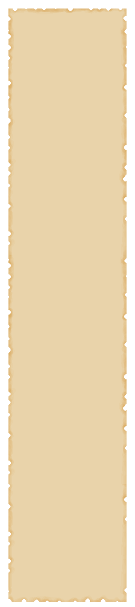
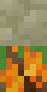
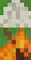
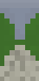
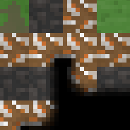

What do I do next?
content
Forest meadow
After surviving the night in the first location, it’s worth thinking about what to do next. You don’t have many options — everything you can do in the first location is basically preparation for surviving in the next ones. You can research the ‘Craft Board’ technology to build a workbench and prepare food, such as rabbit meat. Rabbit meat is very useful for crafting canned food, because if you cook 1 piece of rabbit meat together with 2 used cans in a pot, you will get 2 canned food items.
Now about traveling to other locations. To open the location menu, you need to walk to the edge of the area you are currently in. Once you enter the menu, you will see a map with markers on it.
To move between locations, you must first make sure you have completed all the objectives in the location you are currently in. Then click on the bouncing location marker. If you have met all the requirements, the ‘Go!’ button under the location description will light up white. Once it does, you can press it, and within a few seconds you will arrive at the location you selected.
Forest thickets
This is the most important stage of progression in the game, because this location contains a very useful resource — clay. You can craft a raw brick from two pieces of clay, and then place the raw brick on a campfire to bake it. But first, you need to research the ‘Uncle Hotbrick’ technology to unlock all the subsequent crafts.
Once you have accumulated around 24 bricks, it’s time to make building mortar. To craft it, you need 1 slaked lime and 2 ash in your inventory. Ash drops from burned-out campfires, and to obtain slaked lime, you need to:
First, you need to place a limestone block on a campfire and wait until it turns into quicklime.

+ =
Second, you need to place a trough above the quicklime block, which will contain water. The water in the trough accumulates in the morning. You can also collect water in a jar, and if you place a jar of water above the trough, the trough will draw water from the jar.

Next, after you have made the baked brick and building mortar, you will be able to craft a brick block, which will be useful for building a furnace.
And now the most important part: creating the furnace. In this game, a furnace is a multi-block structure that requires 9 brick blocks and 1 main furnace block. When the structure is built correctly — that is, 8 brick blocks around the furnace block and 1 brick block on top of the furnace’s shell — the furnace becomes active, allowing you to smelt various items.
Cotton Glade
Now that you have moved to the third location, it’s time to take advantage of the opportunity to craft more backpacks. To make them, you will need aluminum, a needle, and fabric — and here you will learn how to obtain all of these materials.
First, metal. It can be obtained from small scrap piles in the third location and then smelted into a more usable form in the furnace you previously built. For example, if you place 4 used cans into the furnace and smelt them, you will get 1 aluminum ingot. And if you put 8 pieces of scrap metal into the furnace, you will get 1 steel plate.

Next, you need to research the ‘Mother’s Weaver’ technology to unlock the crafting of the loom and the backpack. After that, besides creating a loom assembly kit, you will also need to craft a wrench to assemble the loom, as shown in the video:
Press Ctrl + left mouse button to assemble it.
After that, you need to place 6 cotton into the slot in the wheel and start turning the wheel.
And once you craft 4 pieces of cloth, 1 needle, and 2 aluminum ingots, you will be able to make your second backpack and carry more items to the next locations.
Additionally, you can craft a pot after researching the ‘MasterChef’ technology to cook Tier 2 food, such as canned food. This ability to prepare more supplies will be very useful for the next levels — for example, in the ‘Poisoned Forest’ location, where there is no food at all.
Poisoned forest
At this level, you can now research the ‘Armorer’ technology, which allows you to craft ammunition for the sniper rifle. To create a sniper rifle magazine, you will need the main resource — gunpowder. To craft gunpowder, you must gather sulfur, saltpeter (which appears on rotten trees), and ash. After that, by combining gunpowder with a steel plate, you will obtain a magazine that will be essential in combat against enemies — for example, the Hunter Boss who appears on the second day in this location.